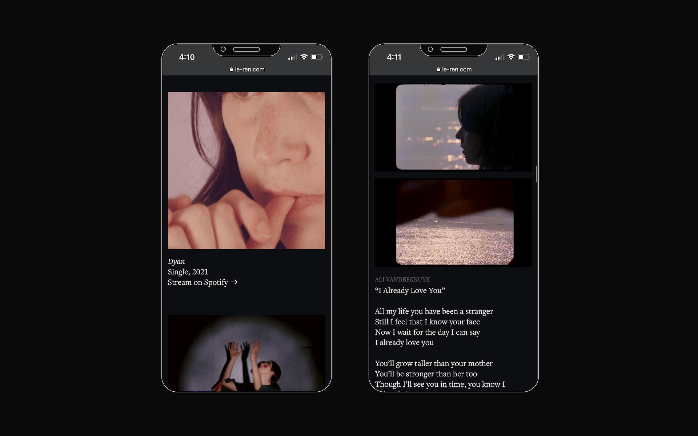
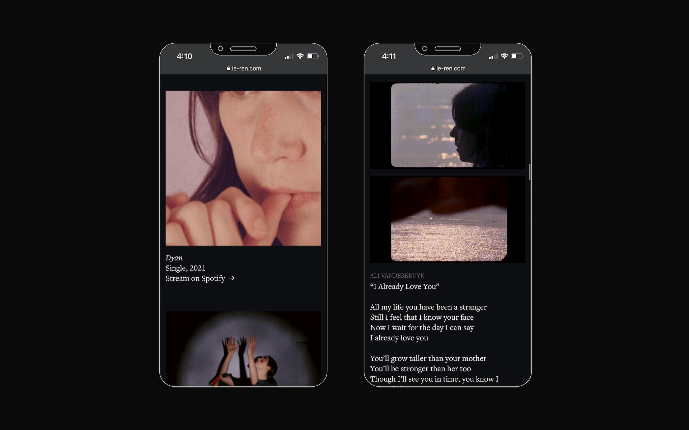
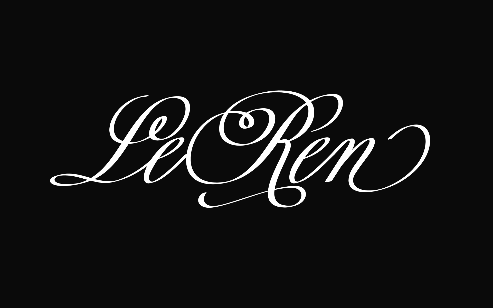
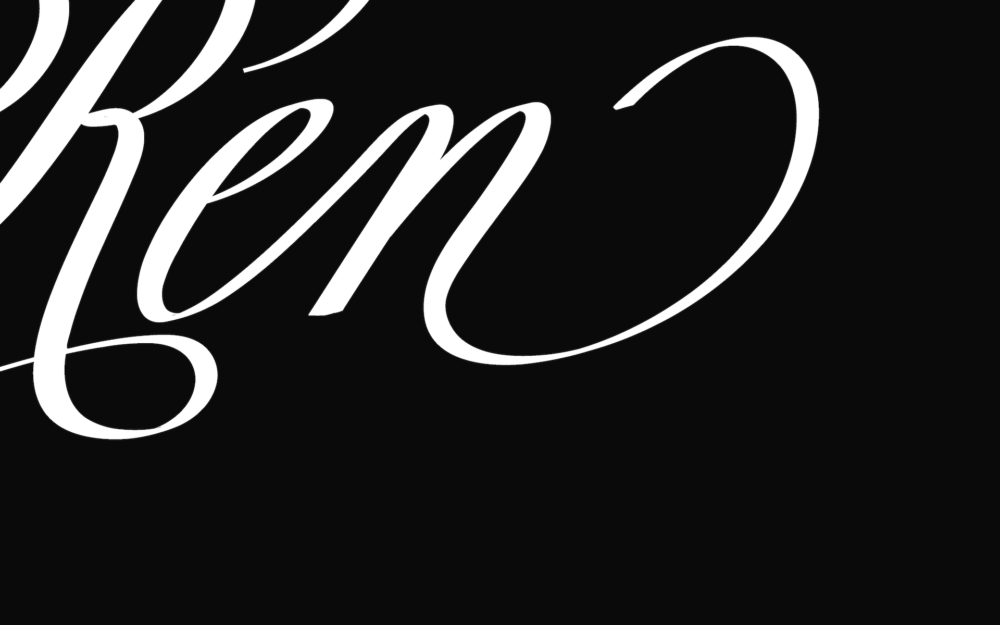
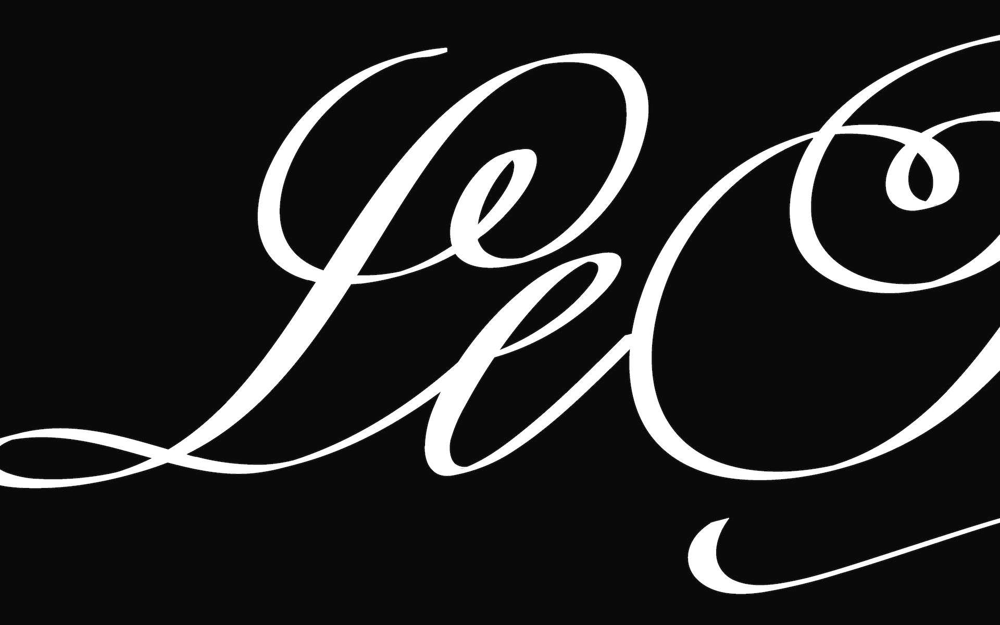
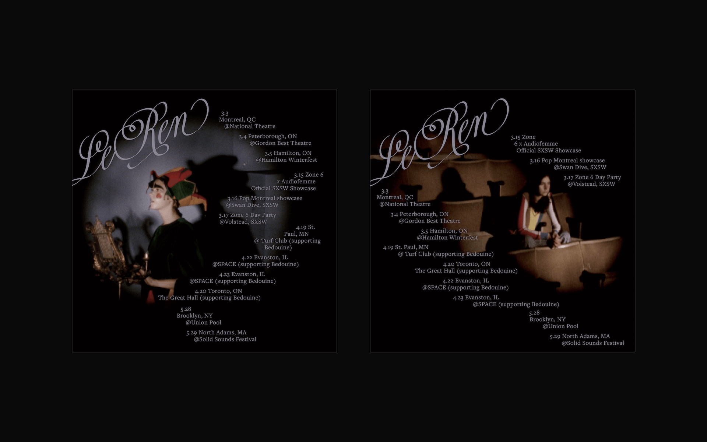

Website and Identity
Le Ren
Visual identity — including wordmark, website, and tour collateral — for Montreal-based artist Le Ren. The system was built to scaffold her world-wise lyrics and cinegenic presence, in conversation with her music: a sentimental patchwork of bluegrass, folk, country, and rock. Her website features minimal typographic hierarchy, creating a quiet, reverent space for her work; and her wordmark pays elegant homage to hand-lettered title cards.
Learn more at le-ren.com, or stream her music on Spotify.
 

Site for Le Ren.Cinematography by Ali Van Der Kruyk



Le Ren's wordmark is a custom redraw of Bellissima Script with a calligraphic lilt, modeled after vintage title cards.


Excerpts from a digital flyer listing Le Ren's 2021 tour dates.Cinematography by Ali Van Der Kruyk